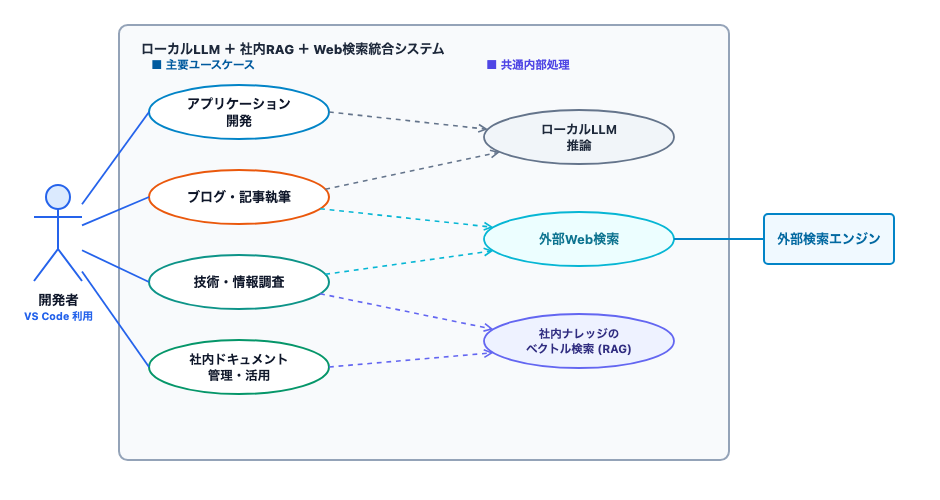
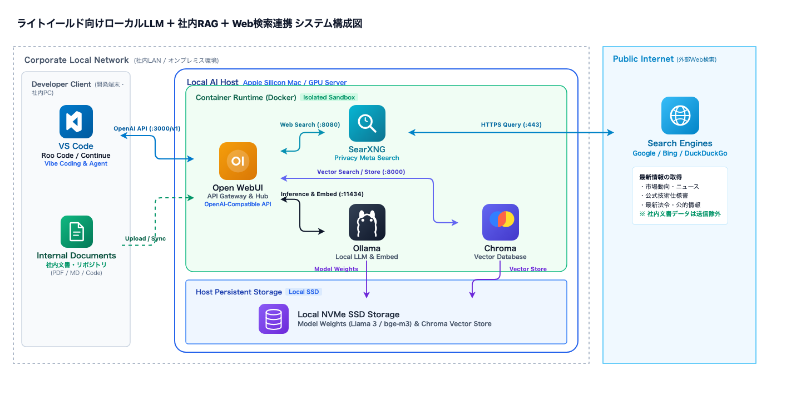
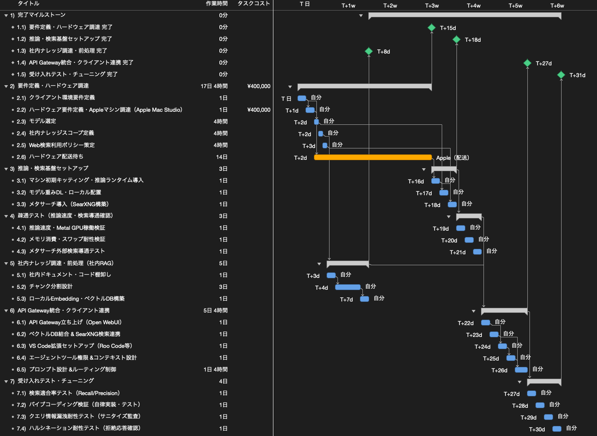

ライトイールド向けローカルLLM環境を構築するWBSを作ってみた
今回は「WBSで覗いてみた」シリーズとして、「ライトイールド向けローカルLLM環境を構築するWBS」を作成しました。
大規模言語モデル（LLM）の進化により、ソースコードの生成や設計書の作成、業務ドキュメントの整理など、日々の業務における生成AIの活用は急速に一般化しています。一方で、機密性の高い社内規程やクライアント関連の文書、設計書やリポジトリのソースコードを外部クラウドや商用AIサービスへ送信することには、セキュリティおよび情報管理上の懸念が伴います。
そこで今回は、株式会社ライトイールドの実務を前提とし、社内資産を外部へ一切送信せず安全に活用できる「完全ローカルLLM＋社内RAG」と、最新の技術仕様などを参照するための「安全な外部Web検索連携」を統合した環境構築プロジェクトをWBSに分解し、タスクの依存関係や所要工数、ハードウェアの配送リードタイム、費用構造について詳しく検証していきます。
※そもそも「WBSとは何か？」「平準化とは何か？」について詳しく知りたい方は、こちらの記事「WBSの勘所」や「ガントチャートの決め手は平準化」も合わせてご覧ください。
1. ライトイールド向けのLLMを考える
まずは、ライトイールドにおいてどのようなLLM環境が必要とされているのか、その背景と設計思想を整理します。
社外秘の業務情報やソースコードの漏洩を防ぐため、当初は「社内LAN完結・外部接続ゼロの完全閉域Web UI」を検討していました。しかし、現場の実務視点で検証を進める中で、主に2つの実用上の課題が浮き彫りになりました。
1つ目は「情報の鮮度」です。ローカルLLM単体（モデルの知識カットオフ以降の更新なし）や過去の社内文書だけでは、外部ライブラリの最新仕様や公式ドキュメントの変更に対応できません。実務の開発作業や技術調査においては、最新のWeb情報を安全に参照できる仕組みが不可欠です。
2つ目は「コーディング作業のパラダイム変化」です。従来のAIコーディングは、エディタ上で1行ずつコードを補完する「Tabキー補完」が主流でした。しかし現在では、エンジニアが要件や指示を自然言語で伝え、AIエージェントが複数ファイルを横断して機能実装、テスト実行、Gitコミットまでを自律的に遂行する「バイブコーディング（Vibe Coding）」へと移行しています。専用のWebチャット画面を行き来してコードをコピー＆ペーストする運用は、開発効率の観点から現実的ではありません。
これらの課題を踏まえ、ライトイールド向けのLLM環境として以下の3つの基本方針を定めました。
- 社内データの完全ローカル隔離: 業務文書、社内リポジトリ、ベクトルデータ（Embedding）、モデル重み、推論ログはすべて社内の専用ホスト内に保持し、外部クラウドへ一切送信しない。
- 安全なWeb検索連携の統合: 最新の技術情報や公式ドキュメントを取得するため、クエリの追跡やプロファイリングを行わないプライバシー保護型のローカルメタサーチエンジン（SearXNG）を経由して検索を行う。
- 開発クライアントの集約: 開発者が常駐するエディタ「VS Code（Roo CodeなどのAIエージェント拡張）」に作業窓口を一本化し、エージェントがエディタ操作やターミナル実行を包括的に代行できるようにする。
2. ユースケースを決める
次に、ライトイールドの開発者が日々遂行する業務シナリオを整理し、システムが果たすべき4つのコアユースケースを定義しました。

図1は、開発者を起点とした業務ゴールと、背後で実行される共通内部処理の関連性を整理したユースケース図です。定義した4つのユースケースの概要は以下の通りです。
- アプリケーション開発: 自然言語による機能実装指示、自律デバッグやエラーログ解析、Gitコミット・プルリクエスト文の作成など、VS Code上での開発業務全般（ローカルLLM推論を利用）。
- ブログ・記事執筆: 技術ブログ記事の企画立案・プロット作成、WBSや記事構成の壁打ち、本文ドラフト生成や推敲（ローカルLLM推論および外部Web検索を利用）。
- 技術・情報調査: 外部の最新ライブラリ仕様やエラー解決策のWeb調査、および社内過去知見・コーディング規約との横断照会（外部Web検索および社内RAG検索を利用）。
- 社内ドキュメント管理・活用: 過去の作業メモ、社内規約、設計書の参照・Q&A、および新規ナレッジの同期・更新（社内RAG検索を利用）。
すべてのユースケースは、内部的に「ローカルLLM推論」「外部Web検索」「社内ナレッジのベクトル検索（RAG）」の3つの共通処理の組み合わせによって完結します。目的に応じて処理を適切に組み合わせることで、不要な外部通信を排除しつつ、各業務ゴールを過不足なく達成できる構造としています。
3. システム構成図を決める
定義したユースケースを満たすため、各コンポーネントの役割とネットワーク境界を明確にしたシステム構成図を作成しました。

本構成の設計における重要なポイントは以下の4点です。
1. VS Codeへのクライアント一本化
クライアント端末側は、開発者が日常的に使用するVS Code（Roo Code等のAIエージェント拡張）のみをフロントエンドとします。エージェントがプロジェクト内のファイル走査、コード編集、ターミナルコマンド実行を自律的に遂行するため、個別のCLIツールやWeb画面を立ち上げる必要がありません。
2. Open WebUIの「API Gateway」運用
ホスト側で稼働するOpen WebUIを、単なるチャット画面としてではなく「OpenAI互換のAPI Gateway（http://localhost:3000/v1）兼オーケストレーター」として利用します。VS CodeからのAPIリクエストを受け取り、背後にある社内ベクトルDB（Chroma）とWeb検索（SearXNG）を自動調停して統合プロンプトを構築し、ローカルLLMへ中継します。
3. ローカル推論エンジンとハードウェア仕様
推論ランタイムにはOllamaを採用し、コーディング特化モデル（Qwen 2.5 Coder等の14B〜32Bクラス）をローカル配備します。32Bクラスモデルの常駐展開（量子化時で約20GB）に加え、長いコンテキスト長（KVキャッシュ）の保持、Dockerコンテナ群（Open WebUI、SearXNG、Chroma）の同時稼働を支えるため、64GBのユニファイドメモリを搭載したApple Mac Studioを専用ホストとして選定しました。広帯域メモリにより、SSDスワップの発生を防ぎながら実用的な生成速度（20〜30+ tokens/s）を維持します。
4. 厳格なネットワーク境界分離
社内ローカルネットワーク（Corporate Local Network）とパブリックインターネット（Public Internet）の境界を明確に分離しています。外部インターネットと通信するのはローカルメタサーチエンジンSearXNGが中継する検索クエリのみであり、社内文書、ソースコード、推論モデルの重みはすべてローカルNVMe SSD内に隔離されます。
4. WBSを作成する
ユースケースとシステム構成が確定したところで、本環境を立ち上げるために必要な作業を作業分解構造（WBS）に落とし込みました。

図3は、プロジェクト全体のタスク分解、依存関係、およびスケジュールを可視化したWBSガントチャートです。全6グループ、21タスクで構成されています。作業者を自分1人に割り当てた場合の想定実働工数は合計24.0人日（192時間）となります。
各作業グループの担当範囲は以下の通りです。
- 1.0 要件定義・ハードウェア調達（3.5人日）: クライアント環境の定義、Apple Mac Studioの選定・調達発注、コーディングモデルの選定、投入する社内文書・コードのスコープ定義、Web検索ポリシー策定。
- 2.0 推論・検索基盤セットアップ（3.0人日）: 納品されたマシンの初期キッティング、推論ランタイム（Ollama）導入、モデル重みファイルのダウンロードとディスク配置、SearXNGメタサーチのDockerコンテナ構築。
- 3.0 疎通テスト（3.0人日）: 推論速度およびMetal GPUアクセラレーションの検証、メモリ消費量とスワップ耐性の計測、SearXNG経由の外部Web検索疎通テスト。
- 4.0 社内ナレッジ調達・前処理（5.0人日）: 社内ドキュメントおよびリポジトリの棚卸し・文字化け除去、チャンク分割設計（コード構造やトークン長に応じた最適な分割設計に手厚く3人日を確保）、ローカルEmbedding（bge-m3等）によるベクトル化とChromaへのインデックス登録。
- 5.0 API Gateway統合・クライアント連携（5.5人日）: Open WebUIのAPIモード起動、ChromaおよびSearXNGのAPI結合、VS Code拡張（Roo Code等）の接続設定、エージェントツール権限の最適化、RAG検索とWeb検索のプロンプトルーティング設計。
- 6.0 受け入れテスト・チューニング（4.0人日）: 社内文書の検索適合率テスト（Recall/Precision）、VS Codeからの自律コーディング動作検証、検索クエリへの機密漏洩耐性テスト（サニタイズ監査）、根拠不在時のハルシネーション耐性テスト。
クリティカルパス分析と並行作業の活用
本プロジェクトには、ハードウェア調達（タスク1.2）に伴う約14営業日の配送待ちリードタイムという外部制約が存在します。
プロジェクト全体の最短完了期間を決定づける最長経路（クリティカルパス）は、「クライアント要件定義 → マシン調達 → 配送待ち → キッティング → モデル配置 → 疎通テスト → DB・検索結合 → プロンプトルーティング → バイブコーディング検証」のラインとなります。
ここで重要なのは、マシンが手元に届くまでの約14営業日の間に、手元の既存PC環境を用いて「グループ4.0 社内ナレッジ調達・前処理（棚卸し・チャンク分割設計・ベクトル化）」や「Web検索ポリシー策定」を前倒しで並行実施しておくという点です。ナレッジ前処理を配送期間中に完了させておくことで、ハードウェア納品後のスケジュール遅延を抑え、最短期間で全体を立ち上げることができます。
費用の構造
最後に、本プロジェクトにかかる費用の構造を整理します。
- ハードウェア調達費用: 約400,000円（税込）
新規調達するApple Mac Studio（M2/M4 Max、64GB Unified Memory、1TB SSD）の購入費用です。 - ソフトウェア・ライセンス費用: 0円
Ollama、Open WebUI、SearXNG、Chroma、VS Code拡張機能（Roo Code等）など、採用ツールはすべてオープンソースソフトウェア（OSS）で統一しています。 - 外部API通信・利用料: 0円 / 月
LLM推論はローカル完結であり、Web検索もローカルのメタサーチを経由するため、月額SaaS費用やトークン従量課金は発生しません。
初期投資としてハードウェアの購入費用は発生するものの、月々のランニングコストをゼロに抑え、社内資産として長期的に運用できる実務的なコスト構造となっています。
終わりに
今回は、ライトイールド向けローカルLLM・社内RAG環境の構築を題材にWBSを作成しました。
社内文書やコード資産の機密保護と、VS Codeでの自律的なバイブコーディングの利便性は、一見トレードオフのように思われます。しかし、ローカル推論基盤、プライバシー保護型メタサーチ、API Gatewayによるオーケストレーションを適切に組み合わせることで、完全ローカル環境であっても実用的なAI開発環境を安全に構築することができます。
また、プロジェクトをWBSに分解することで、ハードウェア調達のリードタイムのような外部制約をあらかじめ可視化し、納品待ち期間中に並行して進められる作業を論理的に整理することが可能になります。
社内へのAI環境導入やセキュリティを考慮した環境構築を検討されている方の参考になれば幸いです。
なお、プロジェクト計画の基礎となるWBSの作り方や平準化の考え方について詳しく知りたい方は、「WBSの勘所」や「ガントチャートの決め手は平準化」もぜひ合わせてご覧ください。
最後までお読みいただきありがとうございました。